Discover the heart in every destination.
Every picture tells a story. Explore the beauty of the Philippines through its breathtaking landscapes, colorful celebrations, delicious food, and everyday Filipino life. This gallery captures the places and moments that make our country special.
Take a closer look at the beauty of the Philippines.
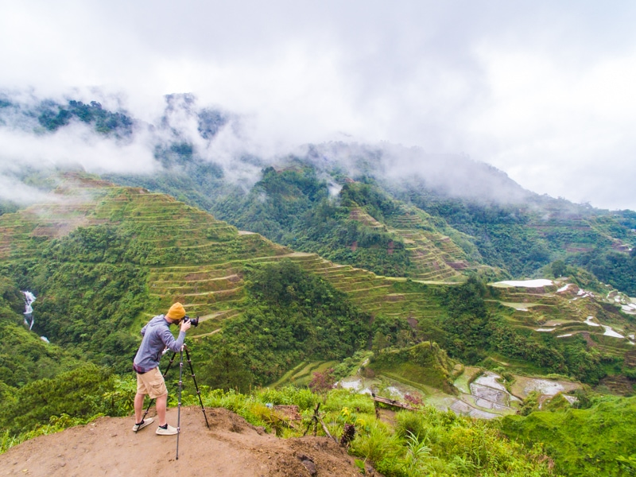
Accessible only by a scenic mountain hike, the remote village at the base of the valley offers an authentic glimpse into traditional highland life. Visitors can walk along narrow stone pathways, stay in classic wooden Ifugao huts, and see a centuries-old irrigation system still actively farmed today
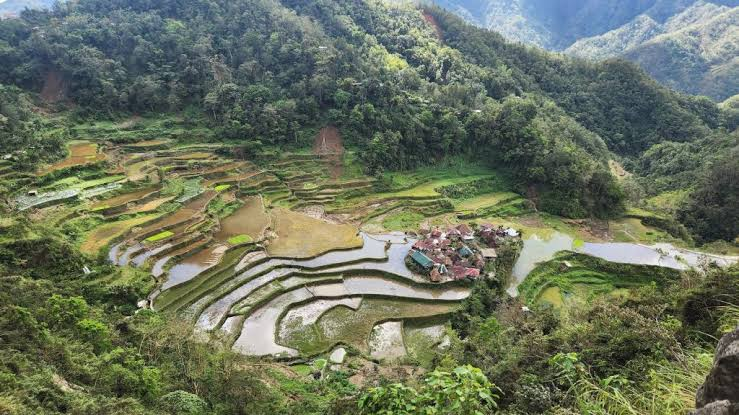
Accessible only by a scenic mountain hike, the remote village at the base of the valley offers an authentic glimpse into traditional highland life. Visitors can walk along narrow stone pathways, stay in classic wooden Ifugao huts, and see a centuries-old irrigation system still actively farmed today.
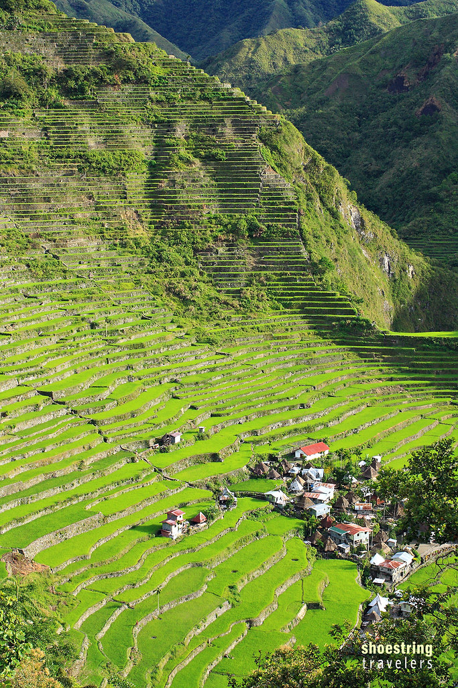
For the best experience, visit between April and May when the rice fields are lush green, or in June and July right before the golden harvest. To get there, take an overnight bus from Manila to Banaue, ride a tricycle or jeepney to the Batad Saddle, and hike down the concrete trail to the village. Time your morning for sunrise to watch the mist clear over the valley, then take a side trek to the nearby Tappiyah Falls, just be sure to wear sturdy shoes and hire a local guide for the steep paths
The Batad Rice Terraces are located in Barangay Batad in Banaue, Ifugao, within the Cordillera Administrative Region of northern Luzon.
Top Attractions & Activities
• Amphitheater Viewpoints. Admire the 2,000-year-old stone-walled paddies carved seamlessly into a steep mountain bowl.
• Terrace Ridge Trekking. Walk along narrow stone pathways connecting active heirloom rice fields and ancient irrigation channels.
• Tappiyah Falls. Hike down past the village to swim in the cool natural basin of a towering 70-meter waterfall.
• Traditional Ifugao Village. Stay overnight in classic wooden native huts and experience quiet highland community life.
Why Foreign Tourists Should Visit
• UNESCO World Heritage Wonder. Recognized globally as a living masterpiece of indigenous engineering and sustainable farming.
• Off-the-Grid Serenity. Accessible only on foot, keeping the valley free from traffic, crowds, and commercial noise.
• Living Indigenous Culture. Gives visitors a rare chance to connect directly with Ifugao heritage and warm local hospitality.
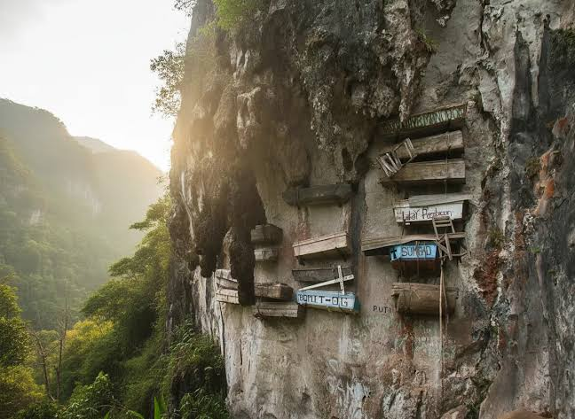
Suspended high along the sheer limestone cliffs of Echo Valley in Mountain Province, the Hanging Coffins of Sagada showcase a centuries-old Igorot burial tradition. Indigenous elders believed that placing the deceased higher off the ground brought their spirits closer to heaven and their ancestors, while protecting their remains from animals and floods.
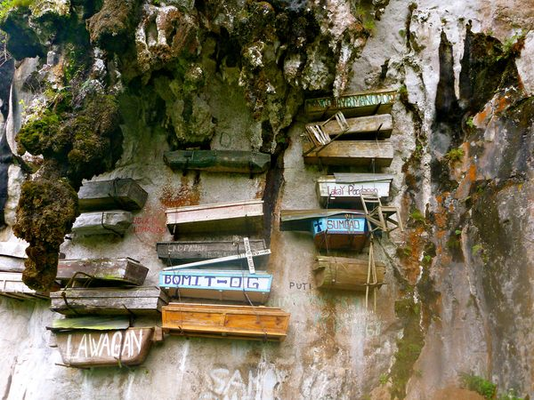
Reaching the site involves a scenic, pine-scented walk past the historic Church of Saint Mary the Virgin and the hilltop cemetery before descending into the misty ravine. Visitors can view dozens of weathered wooden coffins, many remarkably short because bodies were traditionally positioned in a fetal pose to symbolize rebirth, bolted and tied directly onto the jagged karst rock face
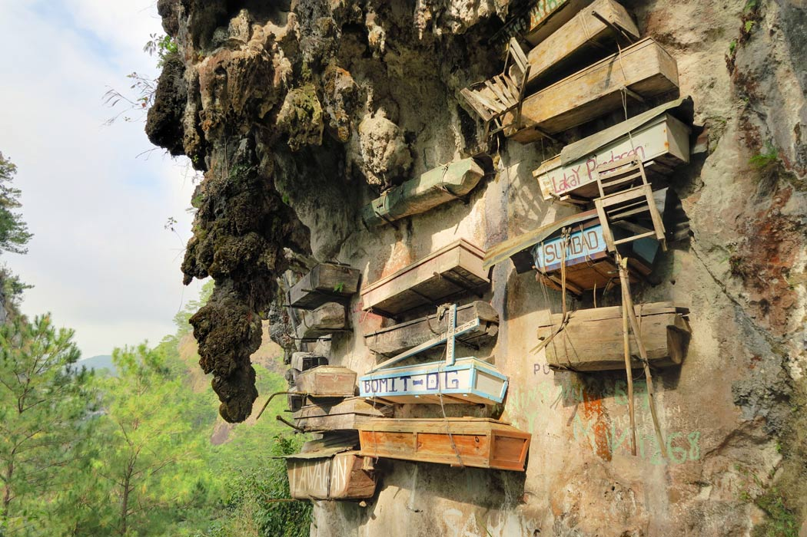
For the best experience, visit during the dry months from November to May when the trails are less slippery and the mountain air is crisp. To get there, take a direct overnight bus from Manila to Sagada (about 12 hours) or travel via Baguio on a scenic 5-to-6-hour mountain bus ride. Register at the municipal tourism office in town first, hire an accredited local guide, and wear sturdy walking shoes for the steep, uneven steps leading down into the valley
The Hanging Coffins of Sagada are located in Echo Valley in Sagada, Mountain Province, within the Cordillera Administrative Region of northern Luzon.
Top Attractions & Activities
• Echo Valley Cliffside. View centuries-old wooden coffins bolted high onto sheer limestone rock faces along a scenic forest trail.
• Church of Saint Mary the Virgin. Pass by this historic stone Anglican church and hilltop cemetery on the walk into the valley.
• Sumaguing Cave & Bomod-ok Falls. Pair your visit with guided spelunking through dramatic limestone chambers or a trek to terraced waterfalls.
• Marlboro Hills Sunrise. Hike to a panoramic mountain viewpoint above a sea of clouds in the early morning.
Why Foreign Tourists Should Visit
• Rare Cultural Heritage. Offers an up-close look at an ancient indigenous Igorot burial tradition preserved for over 2,000 years.
• Cool Mountain Climate. Provides a refreshing break from tropical beach heat with pine forests and crisp highland air.
• Authentic & Uncommercialized. Retains a quiet, community-led atmosphere with strict eco-tourism rules and local guides.
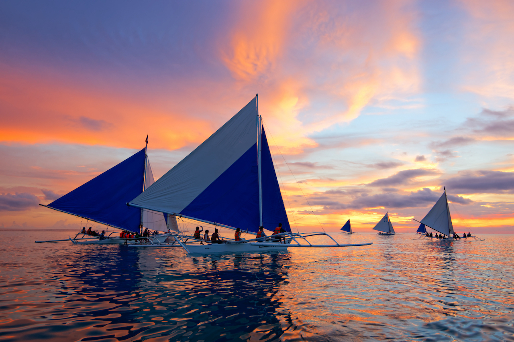
Famous worldwide for its four-kilometer stretch of powder-soft white sand and glassy turquoise waters, Boracay is the premier tropical island getaway in Aklan, Western Visayas. Divided into three distinct beachfront zones, Stations 1, 2, and 3, the western coastline transitions seamlessly from quiet, luxury resorts to vibrant beachfront dining and laid-back tropical lounges.
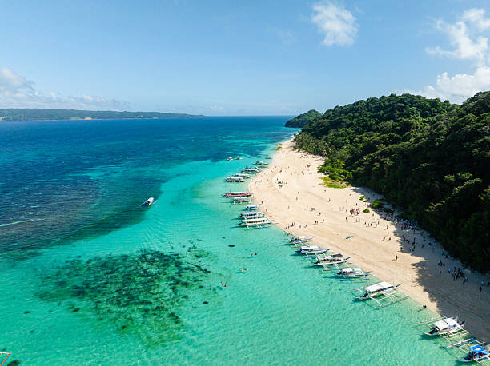
Beyond sunbathing along White Beach, travelers can sail into golden hour aboard a traditional wooden paraw, visit the iconic volcanic formation of Willy’s Rock, or explore quieter northern coves like Puka Shell Beach and Diniwid Beach. On the opposite side of the narrow island, breezy Bulabog Beach serves as a premier hub for kitesurfing and windsurfing during the Amihan season
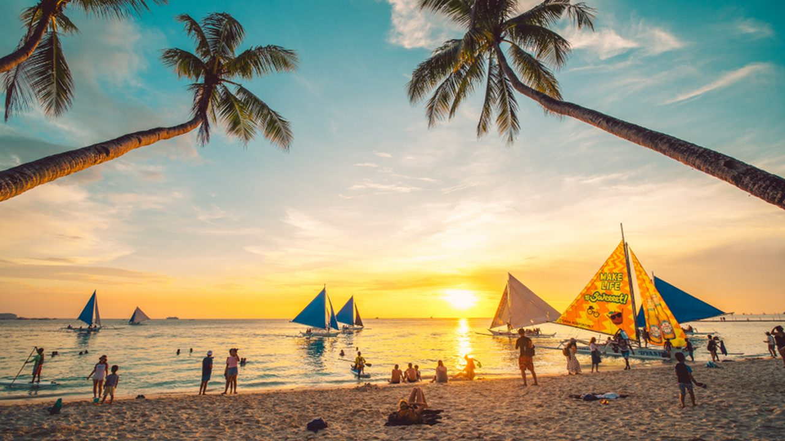
For the best experience, visit during the dry Amihan season from November to May, when skies are clear and White Beach stays calm. To get there, fly directly into Caticlan Airport (about 1 hour from Manila), take a short tricycle ride to Caticlan Jetty Port, and board a 10-to-15-minute ferry across to the island. Keep a digital or printed copy of your accredited hotel booking ready, as port authorities check confirmed reservations before issuing entry passes
Boracay is a small resort island in Aklan province, located in the Western Visayas region off the northwest tip of Panay Island.
Top Attractions & Activities
• White Beach. Walk or swim along four kilometers of powder-soft white sand divided into three distinct beachfront zones.
• Sunset Paraw Sailing. Glide across calm turquoise waters at golden hour aboard a traditional outrigger sailboat.
• Puka Shell Beach. Escape the crowds at a quieter northern cove known for its crushed-shell shoreline and rustic vibe.
• Bulabog Beach Watersports. Try kitesurfing or windsurfing on the breezy eastern side of the island during the dry season.
Why Foreign Tourists Should Visit
• Walkable Convenience. Restaurants, resorts, water activities, and vibrant nightlife are all within easy walking distance along the beach path.
• Quick Access from Manila. Located just a one-hour flight to Caticlan Airport followed by a 15-minute ferry ride.
• World-Famous Sand & Sunsets. Offers calm, crystal-clear swimming waters and reliable beachfront amenities for stress-free relaxation.
>
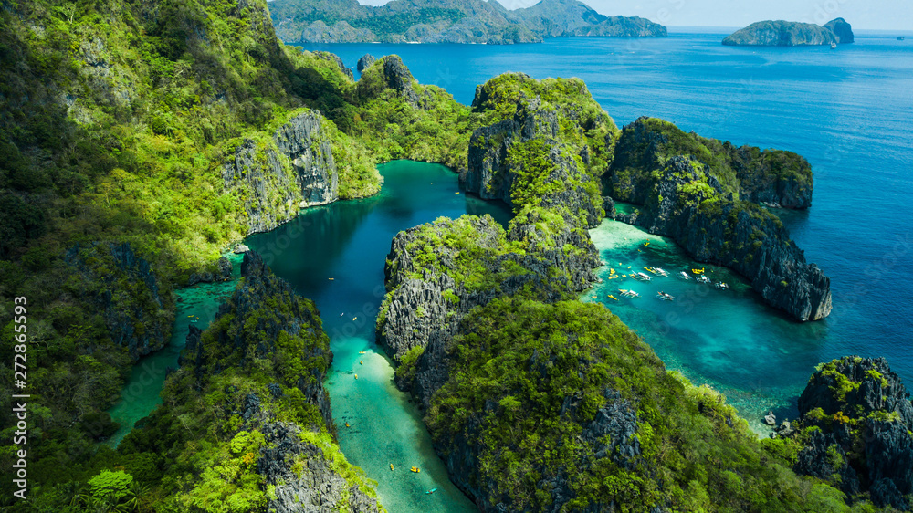
Known as the "Philippines' Last Frontier," Palawan is an archipelagic paradise of more than 1,700 islands famous for towering limestone karst cliffs, emerald lagoons, and vibrant coral reefs. Stretching between the South China Sea and the Sulu Sea, the province centers around three main hubs: El Nido in the north, Coron in the Calamianes Islands, and the capital city of Puerto Princesa
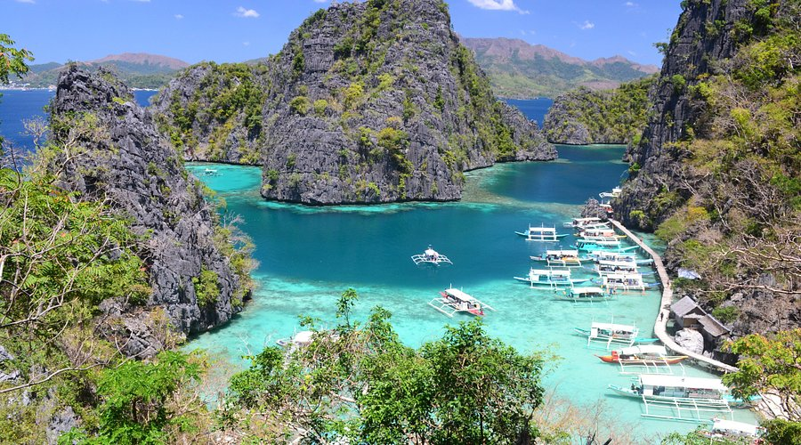
Each hub delivers a distinct adventure. El Nido draws travelers to kayak through the cathedral-like walls of Big Lagoon and Secret Lagoon, Coron offers world-class wreck diving alongside crystal-clear brackish lakes like Kayangan Lake, and Puerto Princesa is home to the UNESCO-listed Subterranean River National Park. For slower-paced coastal days, San Vicente and Port Barton provide quiet, palm-lined beaches away from the crowds.
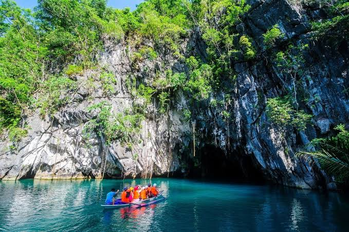
For the best weather, plan your trip during the dry season from November to May, when seas are calmest for island hopping. You can fly directly into Puerto Princesa (PPS), El Nido's Lio Airport (ENI), or Busuanga Airport (USU) for Coron—note that flights to Coron operate out of Clark (CRK) and Cebu rather than Manila. Fast ferries also connect El Nido and Coron in roughly 3.5 to 4 hours
Palawan is an archipelagic province in the Mimaropa region of the western Philippines, stretching between the South China Sea and the Sulu Sea.
Top Attractions & Activities
• El Nido Lagoons. Kayak through emerald waters surrounded by towering limestone cliffs at Big Lagoon and Secret Lagoon.
• Coron Lakes & Wrecks. Swim in crystal-clear Kayangan Lake and Twin Lagoon, or dive historic WWII shipwrecks.
• Puerto Princesa Underground River. Take a guided paddleboat tour through a UNESCO-listed subterranean cave system.
• Port Barton & San Vicente. Unwind on quiet, palm-lined white beaches away from the busy tourist crowds.
Why Foreign Tourists Should Visit
• World-Class Natural Beauty. Consistently ranked among the world's best islands for its untouched marine life and dramatic karst seascapes.
• Adventure for Every Pace. Offers everything from premier scuba diving and island hopping to laid-back beach towns.
• Direct Flight Access. Served by three airports—Puerto Princesa, El Nido, and Coron—making multi-stop trips seamless
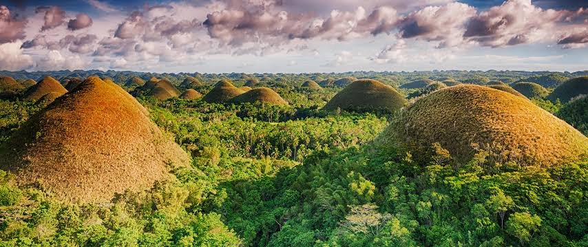
Famous for the iconic Chocolate Hills and the wide-eyed Philippine tarsier, Bohol is a diverse island province in Central Visayas that blends lush countryside adventures with white-sand beaches. Connected by bridge to the main island, Panglao Island serves as the lively coastal hub, offering bustling beachfront dining at Alona Beach alongside quieter stretches like Dumaluan Beach.
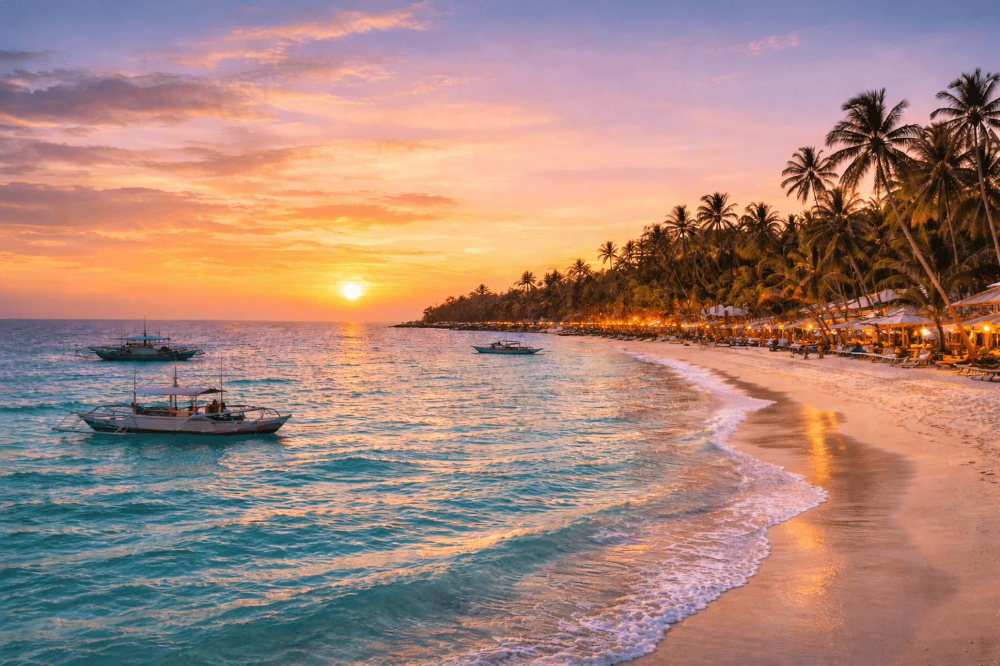
Beyond lounging by the water, travelers can follow the classic countryside route through the Bilar Man-Made Forest, cruise past jungle-lined banks aboard a floating restaurant on the Loboc River, and visit centuries-old coral-stone churches like Baclayon. Offshore, crystal-clear marine sanctuaries around Balicasag Island and the Napaling sardine run offer world-class snorkeling and diving with sea turtles.
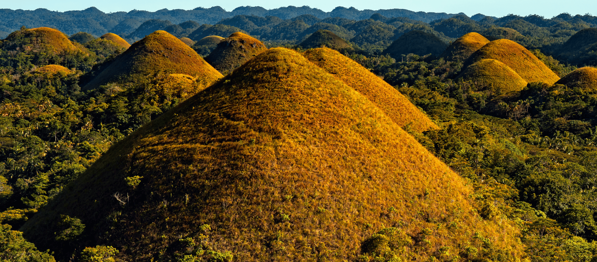
For the best weather, plan your visit during the dry season from December to May—especially around April and May when the Chocolate Hills turn their signature cocoa brown. To get there, take a direct flight from Manila into Bohol–Panglao International Airport (TAG) on Panglao Island, or ride a 2-hour fast ferry from Cebu City to Tagbilaran Port
Bohol is an island province in the Central Visayas region of the Philippines, located southeast of Cebu.
Top Attractions & Activities
• Chocolate Hills. View over 1,200 symmetrical hills in Carmen that turn cocoa brown in the dry season.
• Philippine Tarsier Sanctuary. See one of the world’s smallest primates in a protected forest in Corella.
• Panglao & Balicasag Islands. Relax on Alona Beach or go island hopping to snorkel with sea turtles.
• Loboc River Cruise. Enjoy a buffet lunch aboard a floating restaurant surrounded by lush jungle.
Why Foreign Tourists Should Visit
• Easy to Reach. Features its own international airport on Panglao and a quick two-hour ferry from Cebu.
• Diverse Experiences. Combines white-sand beaches, world-class diving, and inland nature in one compact island.
• Traveler-Friendly. Widely spoken English and warm local hospitality make navigating effortless.
From the beautiful islands to the traditions passed down through generations, the Philippines has countless stories worth sharing. These pictures remind us of the beauty, culture, and identity that make our country unique.